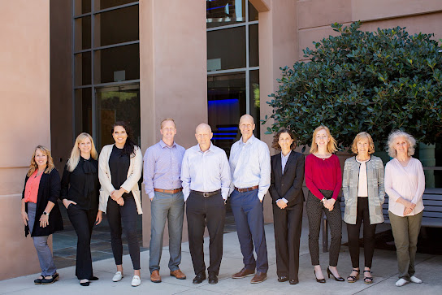

Finding a probate attorney Bay
When an estate is being settled, probate attorney bay area ca can help you understand what paperwork and filings are typically involved, and probate attorney bay area ca can also guide you through how responsibilities are assigned among heirs, trustees, and executors. A clear first consultation often reduces confusion about what is required next and how to document key decisions in a way that supports smoother administration.
If disagreements arise, probate attorney bay area ca can help you evaluate the legal basis of the concerns and identify practical next steps for gathering records, reviewing the relevant documents, and addressing potential misunderstandings early. With probate attorney bay area ca, you can discuss whether an informal approach will likely resolve the issue or whether court involvement may be necessary, along with the timing and considerations that affect outcomes.
For families who want a structured, communication-focused process, probate attorney bay area ca can assist with planning, coordinating deadlines, and keeping the matter organized from initial review through resolution. By clarifying the scope of work and the most important milestones, legal support can help you stay prepared and make informed decisions throughout the process.

Executor support for Bay Area
When you are supporting the person appointed to manage an estate, having an experienced team can make decision-making more reliable and less stressful. A probate attorney bay area ca can explain how court and process requirements differ from one matter to another, while a probate attorney bay area ca can help ensure key documents are collected, reviewed, and organized so filings can move forward without preventable delays. This early structure is especially valuable when beneficiaries expect clarity on timing, responsibilities, and reporting.
During the administration period, deadlines, notices, and accounting obligations can quickly become complicated, particularly when there are multiple beneficiaries, changing assets, or questions about claims. A probate attorney bay area ca can help you understand what the court may require and how to coordinate communications with interested parties, and a probate attorney bay area ca can support your approach to budgeting, asset management, and recordkeeping. If circumstances become disputed, legal guidance can also help you evaluate practical settlement options and, when necessary, the standards for seeking court direction.
In addition to procedural support, executor and estate representatives often need guidance on risk reduction and communication. A probate attorney bay area ca can help you document major decisions, prepare for potential questions from beneficiaries or creditors, and maintain a careful, defensible timeline from start to finish. With the right counsel, you can focus on carrying out the role thoughtfully while meeting legal obligations in a consistent, professional manner.
San Francisco will contest counsel
When a dispute arises over a will or trust, the stakes tend to be highest when deadlines are tight and family dynamics are charged. In San Francisco and across the Bay Area, many people turn to probate attorney bay area ca and probate attorney bay area ca to help clarify roles, set expectations, and build a plan that is grounded in local court practice rather than assumption.
A strong approach often starts with a careful fact review, followed by a clear view of what must be demonstrated and when. With support from probate attorney bay area ca and probate attorney bay area ca, clients can assess competing claims, evaluate negotiation options, and prepare for formal proceedings if settlement discussions do not resolve the issue.
If you anticipate an objection, a challenge to fiduciary actions, or a dispute over interpretation, early guidance can reduce uncertainty and help you move forward with confidence. Consulting probate attorney bay area ca can also support consistent documentation, streamlined communication, and a strategy tailored to the specific posture of the matter.
HALL LAW GROUP
HALL LAW GROUP
Address: 4750 Willow Road, Suite 225, Pleasanton, CA 94588
(925) 460-0711